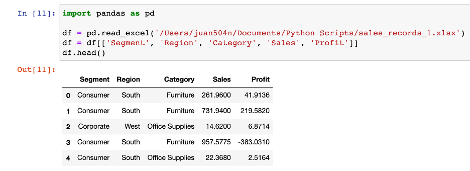
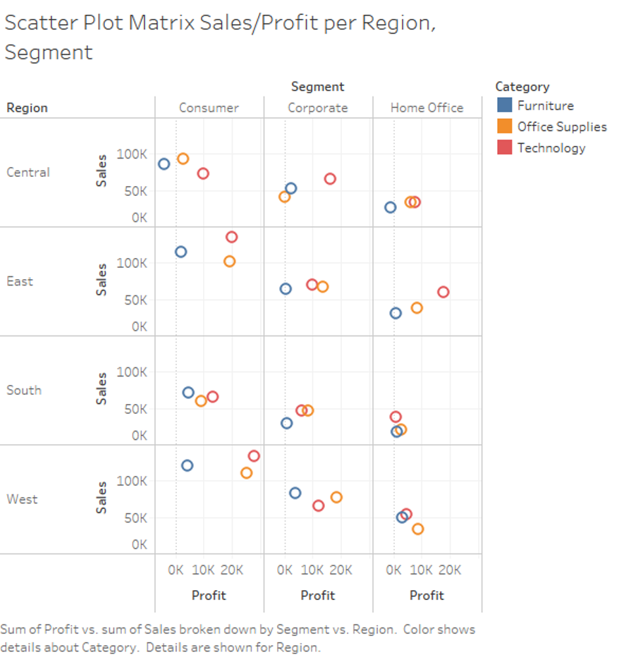
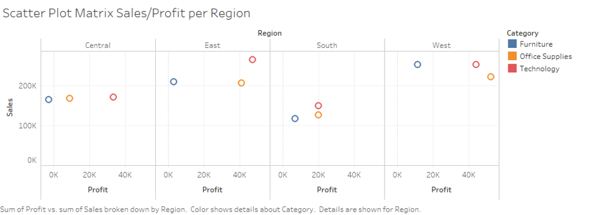
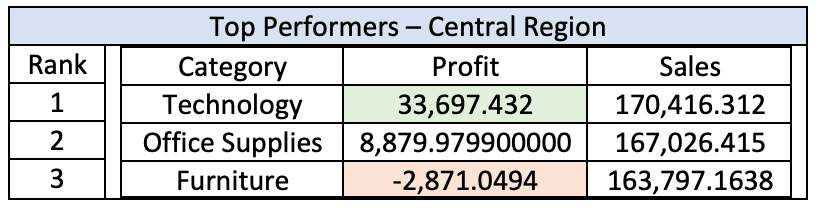
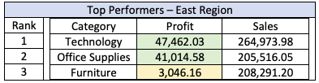
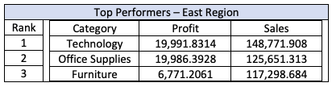
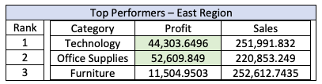

From the archive
Scatter Plot Matrix to Visualize Regional Data
Ten thousand retail sales, four regions and every product category in one chart, by encoding the extra dimensions into a scatter plot matrix.
Introduction
Suppose you work as a data analyst at a national retail company and your manager asks you build a report to answer the following question:
“I want you to find what are the best performing products that we sold in each region”
So now you want to come up with a visualization that is able to convey to your manger this information as clear as possible, without any complicated or messy charts. How should you do it? First, let’s dive into the dataset to get a better understanding of what we’re working with.
The Dataset
The dataset, which can be downloaded here, contains almost 10,000 sales records from the company. Each record contains details of the product name, the category, the location of the sale, the sale amount, and the profit from the sale. Since our task is find which products performed the best in each region, we will only focus on the data that we’ll possibly need to answer that question. Let’s break down the question and map it to the attributes that we need from the dataset. We can define the performance of each product by comparing the sales and profits. This will be the main focus of the report. To keep it simple, we’ll define the products by using the categories in the dataset, which include: furniture, office supplies, and technology. Another thing to keep in mind is who are the products being sold to, in other words, what are the different market segments for the company. This will definitely play a role in the product’s performance in each category. Finally, we’ll obliviously need the region where each product was sold. So, here is the data we’ll be working with. Now to answer the question, what is the best way to visualize this data for the manager?

There are lots of ways to visualize this data, but one effective way to convey all this information into one chart is using a scatter plot matrix. It won’t be in the typical fashion where we are only comparing the relationships between two different combinations of variables. We will have to create a more complex chart for the addition dimensions of our dataset. Since there are 3 segments and 4 regions in our dataset, we can create a 3x4 matrix where each scatter plot maps to a combination of a regional and a market segment. In each of those scatter plots, we will compare the sales vs. profit of each category by mapping them to a different color. The result is the chart below.

With one simple chart, we are able to see which categories have the best performance in each region and market segment. We can assess each category’s performance by their position in each scatter plot, the best performers are high in sales, high in profit or both. For example, we see in the West region under the consumer segment that both technology and office supplies have good sales and profits. In many of the scatter plots we can also see the furniture category being one of the worst performers, sometimes even having negative profits.
This scatter plot can be generalized even further by removing the market segment attribute and only focusing on the product’s performance in each region. If the manager wants a quick summary of the products in each region, this chart can be more useful. Then, if the manger wants to go more in detail, we can break it down by market segment by using the previous scatter plot matrix.

Here’s how we can present our observations to the manager with a report using the our scatter plots:
Executive Summary of our Product’s Performance in each Region
The objective of this report is to understand the performance of our different product categories per region. Each box represents a one of the four regions and the data points represent the performance of each category in that particular region. Performance is defined by the sales volume and the amount of profit for each category – ideally products should be skewed towards the upper right of the plot, indicating a high profit return and high sales volume.
Central Region
The total number of sales in each category are about the same in the central region. Furniture did 163,797 in sales, office supplies 167,026 and technology 170,416. But profits for each category vastly differ. Profits for furniture in the central region have the worst performance in the entire company. Although sales were on par with the other two categories, the amount of profit lost was -$2,871. Technology and office supplies had $33,697.43 and $8,879.98 in profits respectively.

East Region
The east region has the second-best performance for sales and profits. All three categories outsell the central region and profits are green for all three. Both office supplies and technology have the ideal performance having high sales and profits.

South Region
The south region has the lowest volume of sales per category out of the four regions. Technology has the lowest profit amount in this region and furniture sales are profitable in this region despite having lower sales volume than the central region.

West Region
This is the best performing region for the company, office supplies and technology have the ideal performance for sales and profit. Furniture has the best performance in this region, outperforming in sales and profit compared to the other regions.

A more detailed look can by seen by breaking down each region with each market segment:
Conclusion
Our focus should be on technology and office supplies as they are the most valuable to the company. There should be a focus on staying competitive in these categories as they will help grow the company. If furniture sales in the south region do not perform better, it would be best to discontinue sales in that region. Furniture had the worst performance in all regions and had a negative profit in the central region.
Wrap Up
Using a scatter plot matrix can be an effective tool for visualizing data from different regions when you encode the addition dimensions into the chart. When using it on retail sale's data, one can quickly see the performance of each category in the different regions. We only used five dimensions in this example but encoding more than five dimensions can make that visualization too complicated for anyone to digest the information right away.
Originally published October 2020. Moved to the new site in October 2026 with the text unchanged.